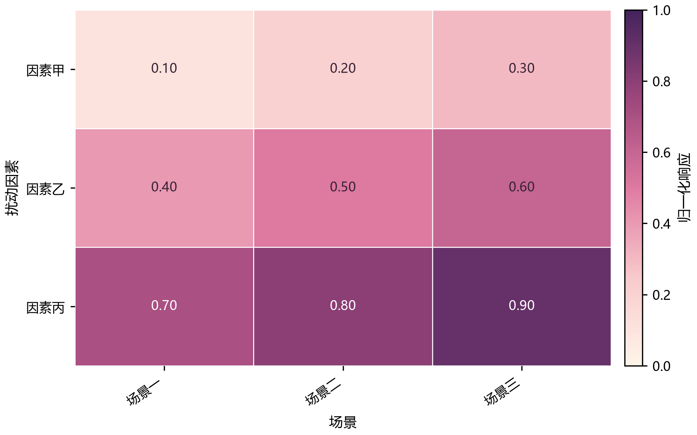
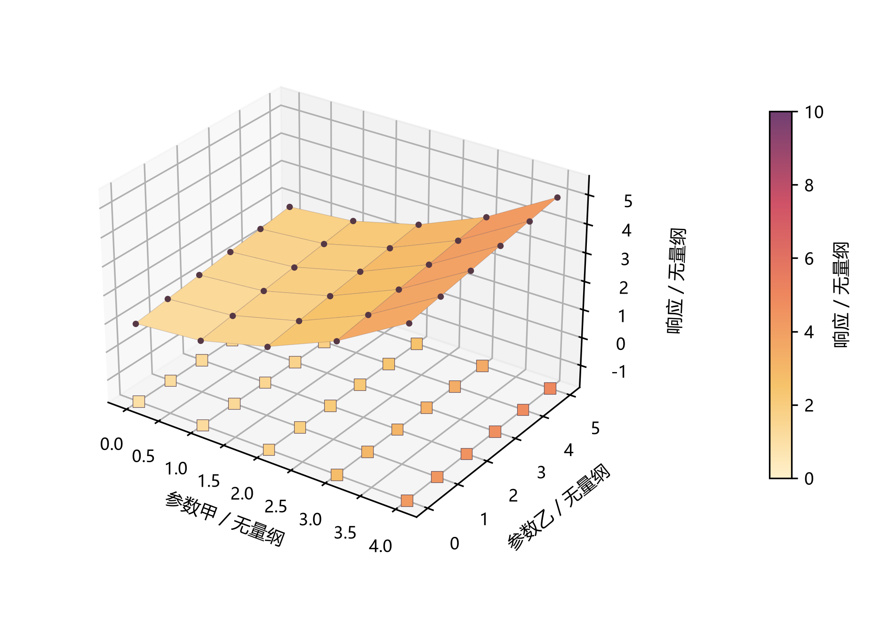
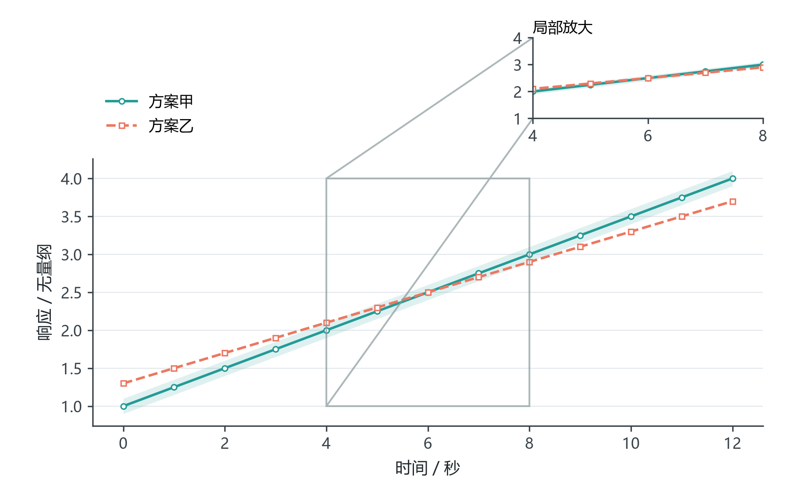
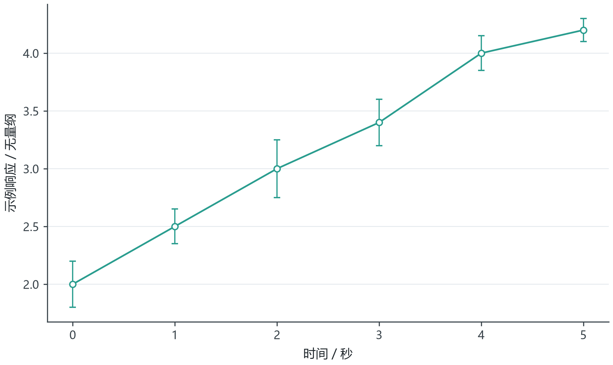
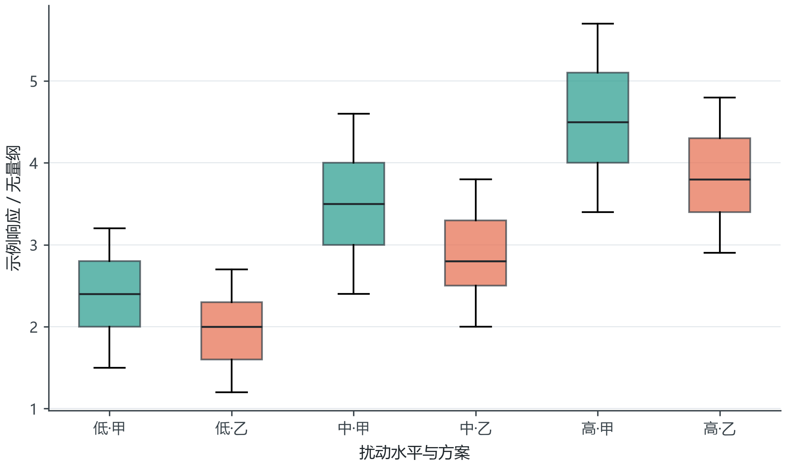
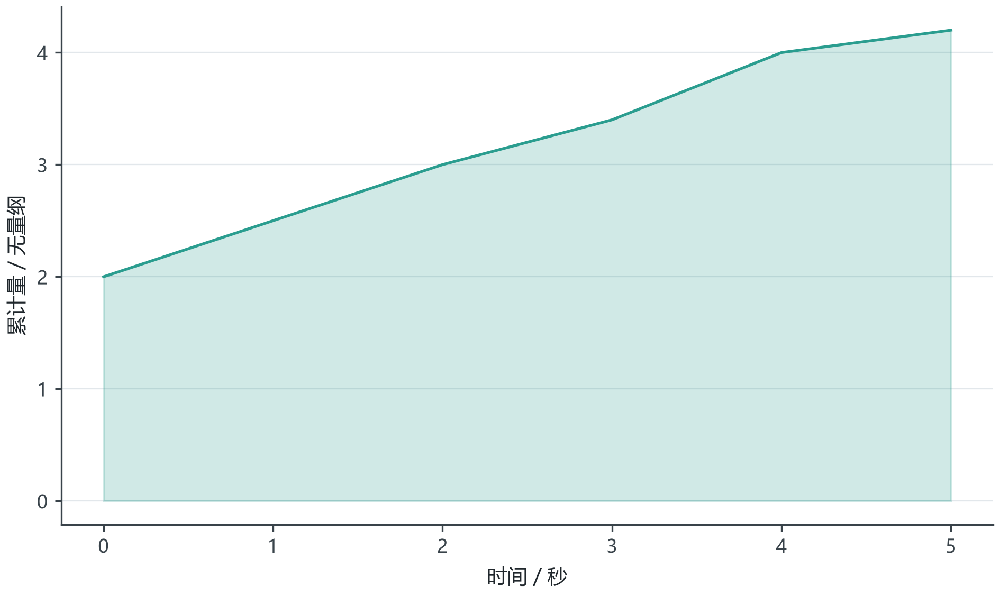

粉紫热力矩阵
米白到粉紫顺序色，细格线与独立色条

rose-heatmap
DEMO_ONLY · 样式参考，不是实验结果六种原创重实现。所有预览是合成演示数据，不是任何赛题实验结果。
米白到粉紫顺序色，细格线与独立色条

rose-heatmap
DEMO_ONLY · 样式参考，不是实验结果同色域曲面与底部投影，保留网格节点

warm-surface-projection
DEMO_ONLY · 样式参考，不是实验结果主图加放大窗，明显的局部范围标记

teal-coral-inset
DEMO_ONLY · 样式参考，不是实验结果协调点线色和清楚端帽，不继承无依据误差

interval-line
DEMO_ONLY · 样式参考，不是实验结果稳定类别色与同尺度箱体，不继承示例星号

paired-distribution
DEMO_ONLY · 样式参考，不是实验结果主线清楚、填充轻盈，不将装饰说成置信带

area-comparison
DEMO_ONLY · 样式参考，不是实验结果